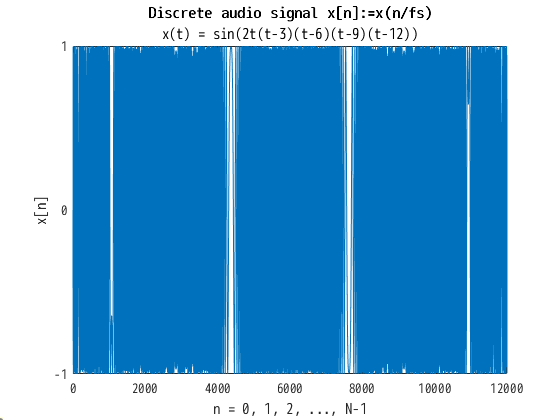
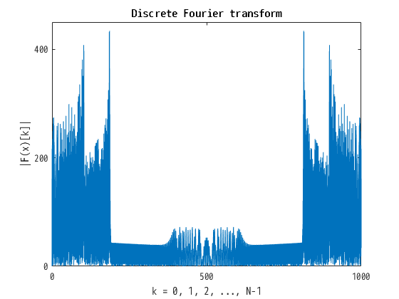
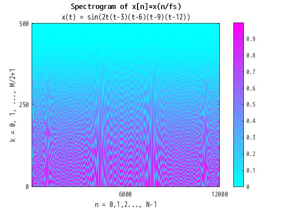

Finite discrete Fourier transform
computer sound
In the present page we analyze audio signal given by \[ x(t) = \sin\bigl(2t(t-3)(t-6)(t-9)(t-12)\bigr), \quad t\in[0,12]. \] We create this as
frequency \(f_s=1000\) {Hz],
sampling rate \(T_s:=\dfrac{1}{f_s}=\dfrac{1}{1000}\) [sec],
number of samples \(L=12000\),
total time \(12\) [sec].
This is NOT comfortable sound. If you do not mind, you can hear its
wav file
. By using MATLAB we have the graph of \(x(t)\), and its Fourier transform, spectrogram by the MATLAB command, and out original spectrogram. See
computer_sound.m
,
computer_sound_a.m
,
computer_sound_b.m
,
computer_sound_c.m
and
computer_sound_d.m
for the detail.
Discrete audio signal

Discrete Fourier transform

Discrete Fourier transform (shifted)
Spectrogram
